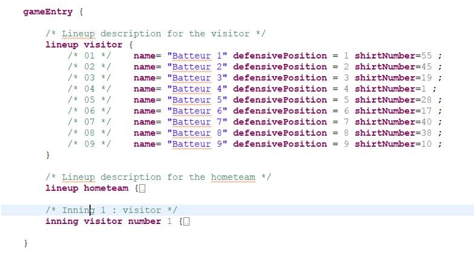

Le repliement permet de masquer temporairement une partie du texte, pour ne garder à l’écran que ce qui est utile. C’est pratique dans un long document, par exemple pour ne conserver que la manche en cours de saisie.

Dans la marge à gauche de l’éditeur, un petit symbole moins (−) apparaît à côté du début de chaque bloc qui peut être replié.
Cliquer sur le moins (−) replie le bloc : son contenu est masqué, seule la première ligne reste visible, suivie de points de suspension. Le symbole devient alors un plus (+).
Cliquer sur le plus (+) déplie le bloc et fait réapparaître tout son contenu.
Le texte masqué n’est ni supprimé ni modifié : il reste dans le document et continue d’être pris en compte pour le scorage.
Un clic droit dans la marge ouvre un menu Repliement (Folding), qui propose notamment de tout replier, de tout déplier ou de rétablir l’état d’origine. Ces commandes sont aussi accessibles par des raccourcis clavier, par exemple Ctrl + pavé numérique - pour replier et Ctrl + pavé numérique + pour déplier le bloc sous le curseur.